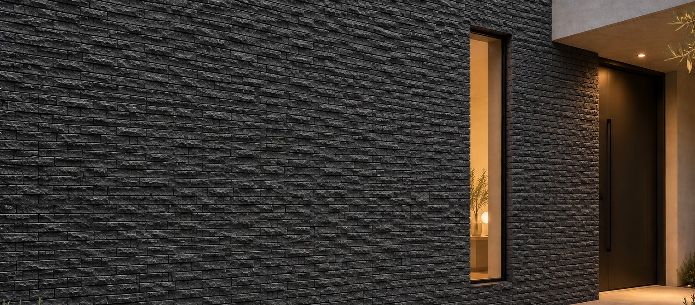

Visualisation · façade éclatée
Basalt · Hauran, Syrie
Basalt
Une pierre volcanique dense, gris anthracite, de la région du Hauran en Syrie, utilisée là-bas en construction depuis l'époque romaine. Dure, elle absorbe très peu d'eau et accroche bien une fois texturée.
Fourniture
Finitions
Bouchardé, flammé, adouci, scié, vieilli, éclaté, face rocheuse
Applications
Façades, murs d'accent, dallage, marches, plages de piscine, sols à fort trafic
Carreaux
60 × 30 · 40 × 40 cm, 2 cm
Demi-tranches
Jusqu'à 200 × 65–70 cm, 2,5–3 cm
Parement
Pièces irrégulières, 3 / 5 cm
Plaquettes
10 × 30 · 15 × 30 · 20 × 40 cm · sur demande
Pavés
Sur demande
Carreaux standard
60 × 30 · 40 × 40 cm, épaisseur 2 cm
Bon à savoir
Les demi-tranches ont une coupe naturelle et sont fournies aux transformateurs qui les finissent. Pour les carreaux et pièces sur mesure : bouchardé, flammé, adouci, scié, vieilli, éclaté et face rocheuse. Poser les plaquettes avec une colle C2 ; fixation mécanique au-delà de 3 m.
Données techniques
Compression
130 – 220 MPa
Densité
2 700 – 2 900 kg/m³
Absorption
0.1 – 0.9 %
Valeurs publiées typiques de la roche ; un rapport d'essai propre au produit est délivré avec chaque commande.

Carreau bouchardé, 2 cm
Pierre Naturelle